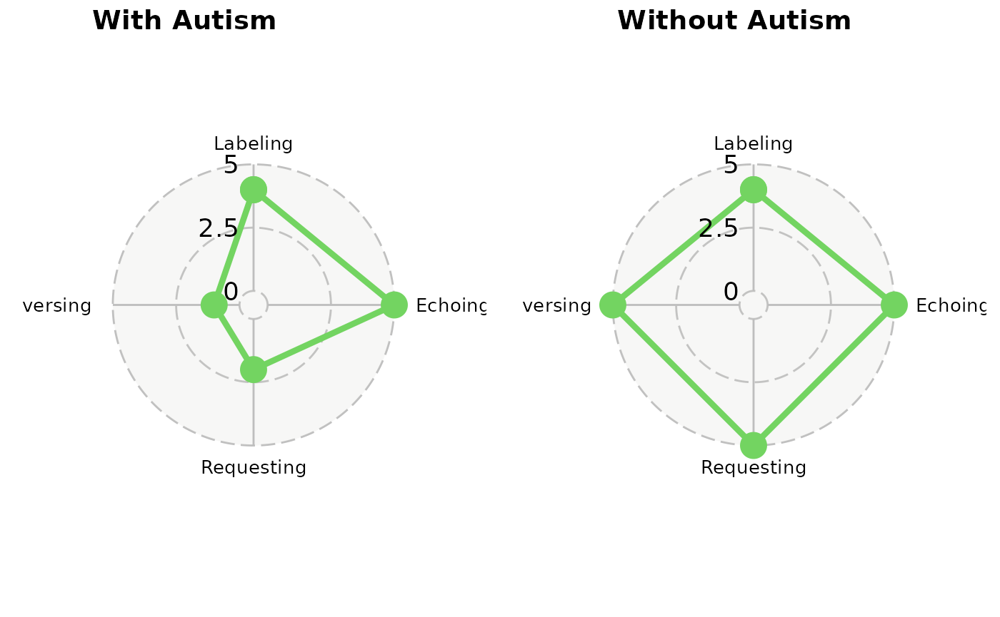

VOX Visualizations and Metrics
datavizandcharts.RmdThe voxanalysis packages provides many distinct data
visualizations and measures of variability to assist a user in diagnosis
a speaker with autism spectrum disorder.
A user can generate a summary report with all data visualizations and
measures using the Shiny application or the
util_generate_word_doc_report function. Instructions for
generating a report can be found here.
The individual data visualizations, tables, and measures can be
generated by a user with R. These functions begin with the
prefixes: - calc_ - plot_ -
table_
Area Q
NOTE: FURTHER DOCUMENTATION IS NEEDED HERE.
Area Q Plot
A user can generate an Area Q plot using plot_area_q.
See ?plot_area_q for more documentation.
# Load example data
data("df_summarized_response_example")
# Generate an Area Q plot for selected dates
plot_area_q(
df_summarized_response = df_summarized_response_example[1:2, ],
date_primary = "2024-08-23",
ind_doc_version = TRUE
)
Area Q Metrics
NOTE: FURTHER CLARIFICATION IS NEEDED HERE ON METRIC DESCRIPTIONS
The Area Q plot can be supplemented by additional metrics:
- Centroid, need definition or description
- Centroidal Distance, need definition or description
- Moment of Area Q, need definition or description
The two report generation methods will provide these metrics next to the Area Q plot.
They also can be generated with calc_centroid. See
?calc_centroid for more documentation.
data("df_input_response_example")
calc_centroid(df_input_response = df_input_response_example)
#> $centroid
#> [1] 1.33 -2.67
#>
#> $distance
#> [1] 3
#>
#> $moment
#> [1] 648VOX Line Chart
NOTE: FURTHER CLARIFICATION IS NEEDED HERE ON HOW TO READ AND UNDERSTAND THE VOX LINE PLOT
See ?plot_vox_line for more documentation.
# Load example data
data("df_input_response_example")
# Generate a VOX line chart across verbal episodes
plot_vox_line(
df_input_response = df_input_response_example,
ind_hide_heading = FALSE,
ind_doc_version = TRUE)
VOX Pie Chart
NOTE: FURTHER CLARIFICATION IS NEEDED HERE ON HOW TO READ AND UNDERSTAND
See ?plot_vox_piechart for more documentation.
# Load example data
library(dplyr)
#>
#> Attaching package: 'dplyr'
#> The following objects are masked from 'package:stats':
#>
#> filter, lag
#> The following objects are masked from 'package:base':
#>
#> intersect, setdiff, setequal, union
data("df_summarized_response_example")
# Filter to a single evaluation date, as the pie chart works with one date at a time
dat <- df_summarized_response_example %>%
filter(date_of_evaluation == max(date_of_evaluation))
# Generate the VOX pie chart
plot_vox_piechart(
df_summarized_response = dat,
ind_doc_version = TRUE)Speaker’s SCoRE
NOTE: FURTHER CLARIFICATION IS NEEDED HERE ON HOW TO READ AND UNDERSTAND
The Speaker’s SCoRE is often paired with the pie chart, particularly
on the summary reports. See ?calc_speakers_score for more
documentation.
library(dplyr)
data("df_summarized_response_example")
# Filter the data to a single evaluation date for accurate SCoRE calculation
dat <- df_summarized_response_example %>%
filter(date_of_evaluation == max(date_of_evaluation))
# Calculate the Speaker's SCoRE
calc_speakers_SCoRE(df_summarized_response = dat)
#> [1] 0.6Cochran’s Q Test Table
NOTE: FURTHER CLARIFICATION IS NEEDED HERE ON HOW TO READ AND UNDERSTAND
See ?table_cochrans_q_test for more documentation.
# Load example response data
data("df_input_response_example")
# Generate a summary table with Cochran's Q test and supporting statistics
table_cochrans_q_test(df_input_response = df_input_response_example)
#> label value
#> 1 Cochran's Q 7.5000
#> 2 Chance-corrected R 0.1875
#> 3 P-value 0.0600Hierarchy Table
NOTE: FURTHER CLARIFICATION IS NEEDED HERE ON HOW TO READ AND UNDERSTAND
See ?table_prompt_hieararchy for more documentation.
# Load example data
library(dplyr)
data("df_summarized_response_example")
# Filter to a single evaluation date, as the table works with one date at a time
dat <- df_summarized_response_example %>%
filter(date_of_evaluation == max(date_of_evaluation))
# Generate the prompt hierarchy table
table_prompt_hierarchy(df_summarized_response = dat)
#> # A tibble: 14 × 5
#> Percent Conversing Labeling Echoing Requesting
#> <dbl> <chr> <chr> <chr> <chr>
#> 1 100 CELR LERC ELRC RELC
#> 2 91.7 - LER ELR REL
#> 3 83.3 CEL LEC ELC -
#> 4 75 - LE EL -
#> 5 66.7 CER - ERC REC
#> 6 58.4 - - ER RE
#> 7 58.3 CLR LRC - RLC
#> 8 50 CE LR EC RL
#> 9 41.7 - - E -
#> 10 41.6 CL LC - -
#> 11 33.3 - L - -
#> 12 25 CR - - RC
#> 13 16.7 - - - R
#> 14 8.3 C - - -